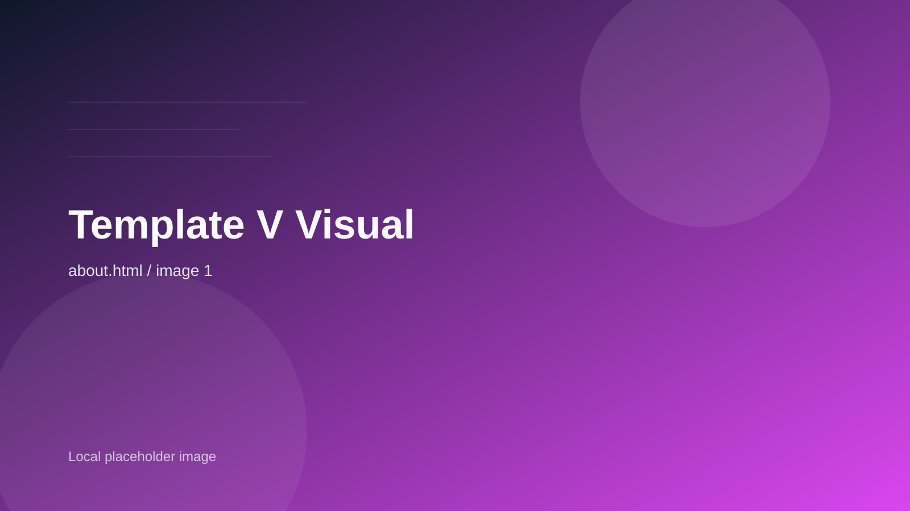

Recall
3x
印象に残る導線設計で、想起率を引き上げます。
Creative provocationfor brands that must be remembered.
目立つだけでは終わらせない。Vivid Impact は、大胆な色面設計と強い言語化で、ブランドの第一想起をつくるクリエイティブパートナーです。
Recall
3x
印象に残る導線設計で、想起率を引き上げます。
Sprints
14d
判断の速さを守るため、短い単位で前進します。
Focus
100%
「誰に、何を、どう残すか」へ徹底して集中します。

Campaign Focus / Launch Identity
Stop the scroll. Own the first second.
Lens 01
色の対比だけでなく、意味の差分まで可視化します。
Lens 02
伝えたい情報を、脳内に最短距離で残します。
Manifesto
強い見た目に振り切っても、導線と構造は冷静に組む。Vivid Impact は、派手さと成果を両立させるための設計にこだわります。
01 / Brand Statement
だからこそ私たちは、色、言葉、写真、動きのすべてを「想起」に寄与する形へ再編集します。一度見た人があとで思い出せることを、成果設計の出発点にします。
Approach
視覚の差を強く出し、メッセージの優先順位を瞬時に伝えます。
Approach
言葉のリズムまで含めて設計し、短い接触でも残るコピーへ整えます。
Approach
注目を集めるだけでなく、問い合わせや資料請求へ自然に流れる構成に落とし込みます。
Selected Works
Launch Campaign
立ち上げ時の熱量をそのまま拡張し、SNS と LP を一体で設計した案件です。

Strategy Refresh
抽象度の高い世界観を、事業戦略とつながる形で可視化しました。

Digital Activation
複数チャネルの接点を同じ熱量で揃え、ブランドの輪郭を太くしています。
Statement System
ブランドの立ち上げ、キャンペーン設計、プロダクト訴求、既存ブランドの再点火まで。一度見たあとも頭に残り続ける輪郭へ整えます。
View packages arrow_forward01
色、タイポ、写真、モーションまで、ブランドの主張を一貫させます。
02
初速が必要なローンチページを、強い視線誘導と短いコピーで構築します。
03
SNS や展示会で使える動きのルールも、同時に定義します。
04
強いビジュアルに負けない言葉で、メッセージの芯をつくります。